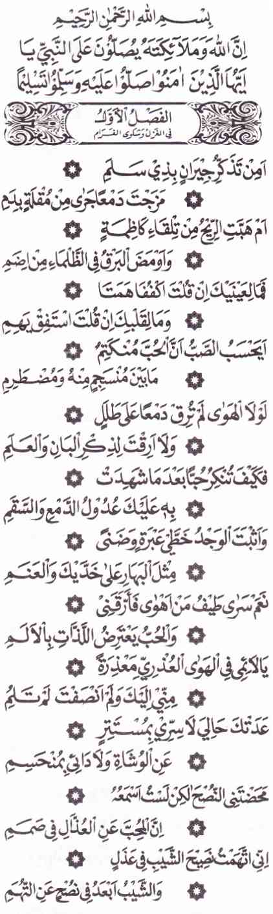
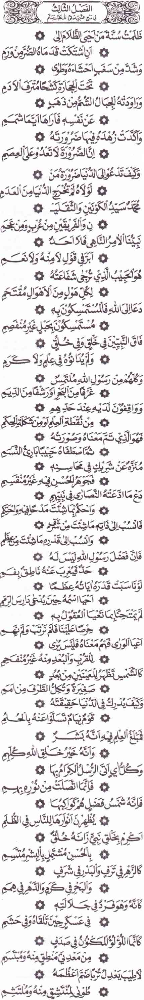
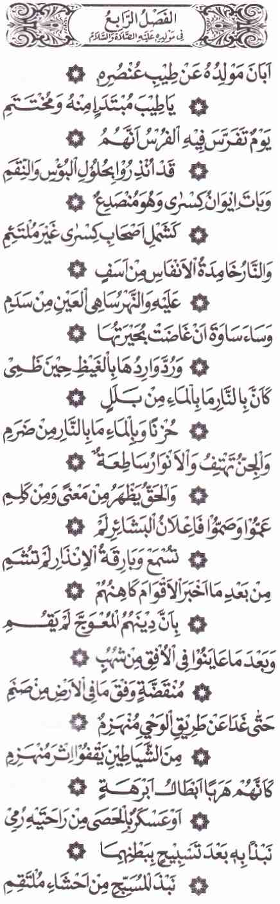
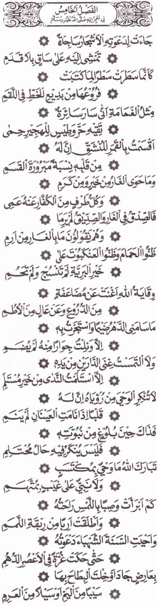
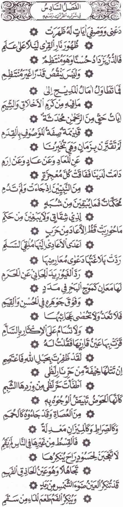
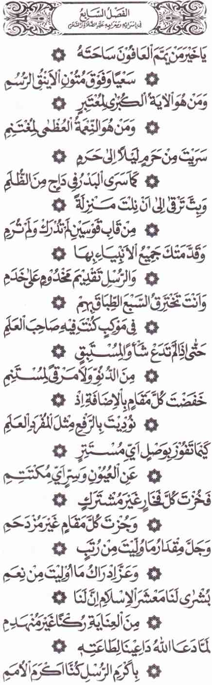
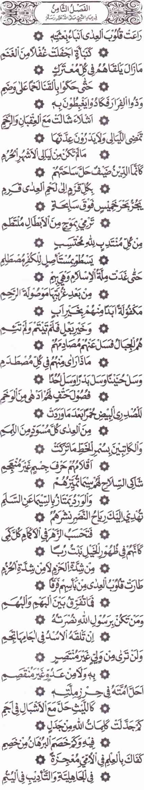
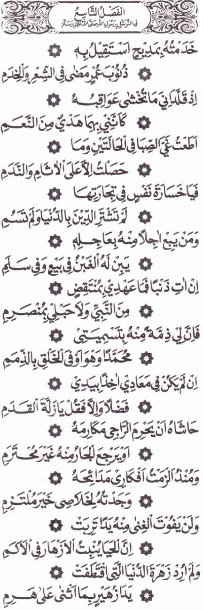
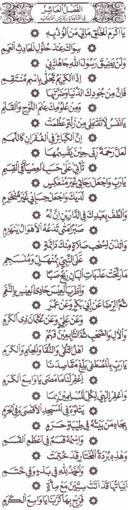

Maulid Burdah
Bagian 1
Biografi Pengarang
Syeikh Muhammad bin Sa`id bin Hammad ash-Shinhaji
Qasidah Burdah memiliki gaya bahasa yang tinggi, susunan yang indah, ungkapan yang menarik, jika dilagukan dapat mengetuk pintu hati yang tertutup, mengajak umat agar mencintai nabi yang penyayang dan penuh belai kasih sayang, didalamnya banyak mengungkapkan sifat dan kebesaran nabi Muhammad, betapa indahnya burdah melukiskan akhlak budi pekerti Rasulullah , betapa manisnya burdah memuji perangai dan kepribadian Rasulullah.
Betapa hebatnya Imam Busairi yang telah banyak mengugah umat islam melalui qasidahnya yang menarik perhatian, kemungkinan sebahagian pembaca belum mengenal kepribadian Imam al-Bushairi, disini penulis mencoba untuk menulis sebahagian biografi beliau.
Nama lengkap beliau
Imam al-Alim Muhammad bin Sa`id bin Hammad bin Muhsin bin Abdullah bin Shinhaj bin Hilal ash-Shinhaji, orang tua beliau berasal dari desa Bushair bahagian So`id Mesir, sebab itulah beliau dinisbahkan kepada al-Bushairi.
Beliau lahir pada tahun 608 hijriyah sebagaimana yang disebutkan oleh Syeikh Doktor Sa`ad Abu al-As`ad, tetapi Ali Basa Mubarak mengungkapkan bahwa kelahiran beliau pada tahun 698 hijriyah, dari hasil penelitian saya bahwa apa yang diungkapkan oleh Ali Mubarak Basa didalam kitabnya " Khithath Taufiqiyah al-Jadidah " merupakan satu kekeliruan, sebab Imam Bushairi merupakan murid Syeikh AbuAbbas al-Mursi, semantara Imam Abu Abbas al-Mursi meninggal dunia pada tahun 686 hijriah, dengan mengikuti apa yang telah disebut oleh Ali Mubarak bahwa Imam Bushairi belum lagi lahir ketika meninggalnya Imam Abu Abbas al-Mursi, diperkuat dengan apa yang di sebutkan oleh Syeikh Daud bin Sulaiman an-Naqsyabandi dan Imam Abu Ali Hasan bin Muhammad bin Qasim asy-Syadzuli bahwa Imam Bushairi lahir pada tahun 608 hijriyah.
Beliau telah mempelajari ilmu tasawuf dan mengambil bai`ah tarikat Syadzuliyah dari Imam al-Arif billah Abu Abbas al-Mursi Khalifah Imam Abu Hasan syadzili, kehebatan dan kewarakan gurunya sangat mempengaruhi jiwa dan budi pekerti Imam Bushairi.
Sebab - sebab ditulisnya qasidah Burdah
Imam Bushairi terkena penyakit lumpuh yang tidak mempu menggerakkan tubuhnya, telah letih dan lelah berobat dengan berbagai macam obat dari para dokter dan ahli kesehatan, namun hasilnya tidak memiliki perobahan, maka beliau mencoba untuk membuat satu qasidah yang yang memohon dengan barkah memuji Rasulullah akan mendapatkan kesembuhan dari Allah, ketika setelah sampai pada kalimat فمبلغ العلم فيه أنه بشر kemudian beliau melihat RAsulullah didalam mimpinya sambil berkata : " Sumpurnakanlah bait sa`ir itu dengan kalimat : " وأنه خير خلق كلهم " kemudian Rasulullah saw menyapu tubuh Imam al-Bushairi sehingga tubuhnya menjadi sebuh dari kelumpuhan.
Berkata Imam Syeikh Hasan al-`Adawi : Ketika Imam al-Bushairi keluar dari rumahnya beliau berjumpa dengan seorang lelaki yang soleh, kemudian meminta agar beliau memperdengarkan qasidah burdahnya, Imam Bushairi merasai keheranan, sebab beliau belum pernah menceritakan segala kejadian yang dia alami kepada orang lain, ketika Imam Bushairi bertanya kepada lelaki tersebut bagaimana beliau mengetahui kejadian tersebut, lelaki tersebut menjawab bahwa beliau mendengar Imam al-bushairi melantunkan sa`irnya di hadapan Rasulullah.
Diantara ulama-ulama besar yang meriwayatkan qasidah Burdah baik secara langsung maupun tidak langsung dari Imam al-Bushairi adalah :
1 - Mufassir al-Qur`an Abu al-Hayyan al-Andalusi.
2 - al-Hafizh Ibnu Sayyidinnas.
3 - Imam al-Hafiz Zainuddin al-Iraqi.
4 - al-Hafiz Ibnu Mulaqan.
5- al-Mujtahid Umar bin Ruslan al-Bulqini.
6 - al-Hafizh Ibnu Hajar al-Asqalani.
7 - al-Hafizh Sayuti.
Perhatian ulama terhadap qasidah Burdah
Qasidah Burdah merupakan qasidah yang paling masyhur di kalangan ulama islam, sehingga para ulama memiliki perhatian yang besar dalam menjaga dan melestarikan Burdah, seperti Syeikh Daud bin Sulaiman an-Naqsyabandi yang membuat sebuah karangan khusus menolak segala hujatan dan tohmah yang di tujukan kepada Qasidah Burdah, kitab tersebut diberi nama " Nahtu Hadidi al-Batil Wa Baradahu Bi Adillati al-Haqi adz-Dzaabati `An Sohibi al-Burdah ", ada pula diantara ulama yang mensyarahkan qasidah Burdah, diantara yang telah mensyarahkannya adalah :
1 - Syeikh Ibnu Marzuq at-Tilmisani al-Maliki.
2 - al-Imam Abu al-BAqa` al-Hanafi.
3 - al-Imam Jalaluddin al-Mahalli.
4 - al-Imam Zakariya al-Ansori.
5 - al-Hafiz Syihabuddin al-Qastolani.
6 - al-Allamah Sa`addudin at-Taftijani.
7 - Syeikh Khalid al-Azhari.
8 - Syeikh Hasan al-`Adawi al-Hamzawi .
Imam Bushairi meninggal dunia pada tahun 696 hijriyah, dan dikuburkan di Iskandariyah ( Alexander ) didalam sebuah mesjid yang indah berhampiran dengan gurunya Sidi Abu Abbas al-Mursi.
Rujukkan :
1 - Nailul Khairat Malmusah karangan Doktor Sa`ad Abu As`ad halaman 181.
2 - Khithathu at-Taufiqiyah al-Jadidah karangan Ali Basa Mubarak , juz : 10 , halaman 16.
3 - Tabaqat Syadzuliyah al-Kubra karangan Syeikh Abi Ali Hasan bin Muhammad bin Qasim al-Kuhun asy-Syadzuli, halaman :89.
4 - Nahtu Hadidi al-Batiki Wa Baradah Bi Adillati al-Haqq adz-Dzaabah `An Sohibul Burdah, halaman: 17
Qasidah Burdah
Oleh:
Al-Alim Muhammad bin Sa`id bin Hammad ash-Shinhaji
sumber : http://allangkati.blogspot.com
Bagian 2
Al-Fashlul Awwal - 1

Artinya - Indonesia
Burdah al Bushiri (bag 1)
===================
Cinta Sang Kekasih
===================
Apakah karena Mengingat Para kekasih di Dzi Salam.
Kau campurkan air mata di pipimu dengan darah.
Ataukah karena angin berhembus dari arah Kazhimah.
Dan kilat berkilau di lembah Idlam dalam gulita malam.
Mengapa bila kau tahan air matamu ia tetap basah.
Mengapa bila kau sadarkan hatimu ia tetap gelisah.
Apakah sang kekasih kira bahwa tersembunyi cintanya.
Diantara air mata yang mengucur dan hati yang bergelora.
Jika bukan karena cinta takkan kautangisi puing rumahnya.
Takkan kau bergadang untuk ingat pohon Ban dan ‘Alam.
Dapatkah kau pungkiri cinta, sedang air mata dan derita.
Telah bersaksi atas cintamu dengan jujur tanpa dusta.
Kesedihanmu timbulkan dua garis tangis dan kurus lemah.
Bagaikan bunga kuning di kedua pipi dan mawar merah.
Memang terlintas dirinya dalam mimpi hingga kuterjaga.
Tak hentinya cinta merindangi kenikmatan dengan derita.
Maafku untukmu wahai para pencaci gelora cintaku.
Seandainya kau bersikap adil takkan kau cela aku.
Kini kau tahu keadaanku, pendusta pun tahu rahasiaku.
Padahal tidakjuga kunjung sembuh penyakitku.
Begitu tulus nasihatmu tapi tak kudengar semuanya.
Karena untuk para pencaci, sang pecinta tuli telinganya.
Aku kira ubanku pun turut mencelaku.
Padahal ubanku pastilah tulus memperingatkanku.
Al-Fashlus Tsani - 2
Artinya - Indonesia
Peringatan akan Bahaya Hawa Nafsu
==================================
Sungguh hawa nafsuku tetap bebal tak tersadarkan.
Sebab tak mau tahu peringatan uban dan kerentaan.
Tidak pula bersiap dengan amal baik untuk menjamu.
Sang uban yang bertamu di kepalaku tanpa malu-malu.
Jika kutahu ku tak menghormati uban yang bertamu.
Kan kusembunyikan dengan semir rahasia ketuaanku itu.
Siapakah yang mengembalikan nafsuku dari kesesatan.
Sebagaimana kuda liar dikendalikan dengan tali kekang.
Jangan kau tundukkan nafsumu dengan maksiat.
Sebab makanan justru perkuat nafsu si rakus pelahap.
Nafsu bagai bayi, bila kau biarkan akan tetap menyusu.
Bila kau sapih ia akan tinggalkan menyusu itu.
Maka kendalikan nafsumu, jangan biarkan ia berkuasa.
Jika kuasa ia akan membunuhmu dan membuatmu cela
Gembalakanlah ia, ia bagai ternak dalam amal budi.
Janganlah kau giring ke ladang yang ia sukai.
Kerap ia goda manusia dengan kelezatan yang mematikan.
Tanpa ia tahu racun justru ada dalam lezatnya makanan.
Kumohon ampunan Allah karena bicara tanpa berbuat.
Kusamakan itu dengan keturunan bagi orang mandul.
Kuperintahkan engkau suatu kebaikan yang tak kulakukan.
Tidak lurus diriku maka tak guna kusuruh kau lurus.
Aku tak berbekal untuk matiku dengan ibadah sunnah.
Tiada aku dan puasa kecuali hanya yang wajib saja.
-------------------------------------------------
Al-Fashlus Tsalis - 3

Artinya - Indonesia
Syair Burdah al Bushiri (bag 3)
=======================
Pujian Kepada Nabi SAW
=======================
Kutinggalkan sunnah Nabi yang sepanjang malam.
Beribadah hingga kedua kakinya bengkak dan keram.
Nabi yang karena lapar mengikat pusarnya dengan batu.
Dan dengan batu mengganjal Perutnya yang halus itu.
Kendati gunung emas menjulang menawarkan dirinya.
la tolak permintaan itu dengan perasaan bangga.
Butuh harta namun menolak, maka tambah kezuhudannya.
Kendati butuh pada harta tidaklah merusak kesuciannya.
Bagaimana mungkin Nabi butuh pada dunia.
Padahal tanpa dirinya dunia takkan pernah ada.
Muhammadlah pemimpin dunia akherat.
Pemimpin jin dan manusia, bangsa Arab dan non Arab.
Nabilah pengatur kebaikan pencegah mungkar.
Tak satu pun setegas ia dalam berkata ya atau tidak.
Dialah kekasih Allah yang syafa’atnya diharap.
Dari tiap ketakutan dan bahaya yang datang menyergap.
Dia mengajak kepada agama Allah yang lurus.
Mengikutinya berarti berpegang pada tali yang tak terputus.
Dia mengungguli para Nabi dalam budi dan rupa.
Tak sanggup mereka menyamai ilmu dan kemuliaannya.
Para Nabi semua meminta dari dirinya.
Seciduk lautan kemuliaannya dan setitik hujan ilmunya.
Para Rasul sama berdiri di puncak mereka.
Mengharap setitik ilmu atau seonggok hikmahnya.
Dialah Rasul yang sempurna batin dan lahirnya.
Terpilih sebagai kekasih Allah pencipta manusia.
Dalam kebaikanya, tak seorang pun menyaingi.
Inti keindahannya takkan bisa terbagi-bagi.
Jauhkan baginya yang dikatakan Nasrani pada Nabinya.
Tetapkan bagi Muhammad pujian apapun kau suka.
Nisbatkan kepadanya segala kemuliaan sekehendakmu.
Dan pada martabatnya segala keagungan yang kau mau.
Karena keutamaannya sungguh tak terbatas.
Hingga tak satupun mampu mengungkapkan dengan kata.
Jika mukjizatnya menyamai keagungan dirinya.
Niscaya hiduplah tulang belulang dengan disebut namanya.
Tak pernah ia uji kita dengan yang tak diterima akal.
Dari sangat cintanya, hingga tiada kita ragu dan bimbang.
Seluruh mahluk sulit memahami hakikat Nabi.
Dari dekat atau jauh, tak satu pun yang mengerti.
Bagaikan matahari yang tampak kecil dari kejauhan.
Padahal mata tak mampu melihatnya bila berdekatan.
Bagaimana seseorang dapat ketahui hakikat Sang Nabi
Padahal ia sudah puas bertemu dengannya dalam mimpi
Puncak Pengetahuan tentangnya ialah bahwa ia manusia
Dan ia adalah sebaik baik seluruh ciptaan Allah
Segala mukjizat para Rasul mulia sebelumnya
Hanyalah pancaran dari cahayanya kepada mereka
Dia matahari keutamaan dan para Nabi bintangnya
Bintang hanya pantulkan sinar mentari menerangi gulita
Alangkah mulia paras Nabi yang dihiasi pekerti
Yang memiliki keindahan dan bercirikan wajah berseri
Kemegahannya bak bunga, kemuliaannya bak purnama
Kedermawanannya bak lautan, kegairahannya bak sang waktu
la bagaikan dan memang tiada taranya dalam keagungan
Ketika berada di sekitar pembantunya dan di tengah pasukan
Bagai mutiara yang tersimpan dalam kerangnya
Dari kedua sumber, yaitu ucapan dan senyumannya
Tiada keharuman melebihi tanah yang mengubur jasadnya
Beruntung orang yang menghirup dan mencium tanahnya
Al-Fashlur Rabi' - 4

Artinya - Indonesia
Kelahiran Sang Nabi SAW
=======================
Kelahiran Sang Nabi menunjukkan kesucian dirinya
Alangkah eloknya permulaan dan penghabisannya
Lahir saat bangsa Persia berfirasat dan merasa
Peringatan akan datangnya bencana dan angkara murka
Dimalam gulita singgasana kaisar Persia hancur terbelah
Sebagaimana kesatuan para sahabat kaisar yang terpecah
Karena kesedihan yang sangat, api sesembahan padam
Sungai Eufrat pun tak mengalir dari duka yang dalam
Penduduk negeri sawah bersedih saat kering danaunya
Pengambil air kembali dengan kecewa ketika dahaga
Seakan sejuknya air terdapat dalam jilatan api
Seakan panasnya api terdapat dalam air, karena sedih tak terperi
Para jin berteriak sedang cahaya terang memancar
Kebenaran pun tampak dari makna kitab suci maupun terujar
Mereka buta dan tuli hingga kabar gembira tak didengarkan
Datangnya peringatan pun tak mereka hiraukan
Setelah para dukun memberi tahu mereka
Agama mereka yang sesat takkan bertahan lama
Setelah mereka saksikan kilatan api yang jatuh dilangit
Seiring dengan runtuhnya semua berhala dimuka bumi
Hingga lenyap dan pintu langitNya
Satu demi satu syetan lari tunggang langgang tak berdaya
Mereka berlarian laksana lasykar Raja Abrahah
Atau bak pasukan yang dihujani kerikil oleh tangan Rasul
Batu yang Nabi lempar sesudah bertasbih digenggamannya
Bagaikan terlemparnya Nabi Yunus dan perut ikan paus
Al-Fashlul Khamits - 5

Artinya - Indonesia
Mukjizat Sang Nabi SAW
======================
Pohon-pohon mendatangi seruannya dengan ketundukkan
Berjalan dengan batangnya dengan lurus dan sopan
Seakan batangnya torehkan sebuah tulisan
Tulisan yang indah di tengah-tengah jalan
Seperti juga awan gemawan yang mengikuti Nabi
Berjalan melindunginya dari sengatan panas siang hari
Aku bersumpah demi Allah pencipta rembulan
Sungguh hati Nabi bagai bulan dalam keterbelahan
Gua Tsur penuh kebaikan dan kemuliaan. Sebab Nabi
dan Abu Bakar di dalamnya, kaum kafir tak lihat mereka
Nabi dan Abu Bakar Shiddiq aman didalamnya tak cedera
Kaum kafir mengatakan tak seorang pun didalam gua
Mereka mengira merpati takkan berputar diatasnya
Dan laba laba takkan buat sarang jika Nabi didalamnya
Perlindungan Allah tak memerlukan berlapis baju besi
Juga tidak memerlukan benteng yang kokoh dan tinggi
Tiada satu pun menyakiti diriku, lalu kumohon bantuan Nabi
Niscaya kudapat pertolongannya tanpa sedikit pun disakiti
Tidaklah kucari kekayaan dunia akhirat dari kemurahannya
Melainkan kuperoleh sebaikbaik pemberiannya
Janganlah kau pungkiri wahyu yang diraihnya lewat mimpi
Karena hatinya tetap terjaga meski dua matanya tidur terlena
Demikian itu tatkala sampai masa kenabiannya
Karenanya tidaklah diingkari masa mengalami mimpinya
Maha suci Allah, wahyu tidaklah bisa dicari
Dan tidaklah seorang Nabi dalam berita gaibnya dicurigai
Kerap sentuhannya sembuhkan penyakit
Dan lepaskan orang yang berhajat dari temali kegilaan
Doanya menyuburkan tahun kekeringan dan kelaparan
Bagai titik putih di masa-masa hitam kelam
Dengan awan yang curahkan hujan berlimpah
Atau kau kira itu air yang mengalir dari laut atau lembah
Al-Fashlus Saadis - 6

Artinya - Indonesia
Kemulian Al-Qur'an dan pujian terhadapnya
=========================================
Biarkan kusebut beberapa mukjizat yang muncul pada Nabi
Seperti nampaknya api jamuan, malam hari diatas gunung tinggi
Mutiara bertambah indah bila ia tersusun rapi
Jika tak tersusun nilainya tak berkurang sama sekali
Segala pujian itu puncaknya adalah memuji
Sifat dan pekerti mulia yang ada pada Nabi
Ayat ayat Al Qur'an yang diturunkan Allah adalah baharu
Tapi Allah adalah kekal tak kenal waktu
Ayat-ayat yang tak terikat waktu dan kabarkan kita
Tentang hari kiamat, kaum 'Aad dan negeri Irom
Ayat ayat yang selalu bersama kita dan mengungguli
Mukjizat para Nabi yang muncul tapi tak lestari
Penuh kepastian dan tak sisakan bagi para musuh segala keraguan.
Ayat yang tak sedikit pun menyimpang dari kebenaran
Tak satu ayat pun ditentang kecuali musuh terberatnya
Akan kembali kepadanya dengan salam dan beriman
Keindahan sastranya membuat takluk penentangnya
Bak pencemburu membela kehormatan dari tangan pendosa
Baginya makna-makna yang saling menunjang bak ombak lautan
Yang nilai keindahannya melebihi mutiara berkilauan
Keajaibannya banyak dan tak terhingga
Dan keajaiban itu tak satu pun membuat bosan kita
Teduhlah mata pembacanya, lalu kukatakan padanya
Beruntunglah engkau, berpeganglah selalu pada taliNya
Jika kau baca ia karena takut panas neraka Lazha
Padamlah panas neraka Lazha karena kesejukannya
Bagai telaga Kautsar wajah pendosa jadi putih karenanya
Padahal dengan wajah hitam arang mereka datangi ia
la lurus bagai shirath, adil bagai timbangan
Kitab kitab lain takkan selanggeng ia dalam keadilan
Jangan heran pada pendengkinya yang selalu ingkar
Pura-pura bodoh padahal ia cukup paham dan pintar
Bagai orang sakit mata yang pungkiri sinar mentari
Bagai orang sakit yang lezatnya air ia pungkiri
Al-Fashlus Sab`ah - 7

Artinya - Indonesia
Isra' Mi'raj Nabi SAW
=====================
Wahai manusia terbaik yang dituju pekarangannya
Dijalan atau menunggangi unta yang cepat larinya
Wahai Nabi yang jadi pertanda bagi pencari kebenaran
Yang jadi karunia terbesar bagi pencari nikmat Tuhan
Malam itu kau berjalan dari Masjidil Haram ke Al Aqsha
Bagai purnama yang bergerak di malam gulita
Kau terus saja meninggi hingga sampai tempat terdekat
Yang tak seorang pun mencapai atau mengharap
Para nabi mendahulukanmu berdiri di depan
Tak ubahnya penghormatan pelayan kepada sang tuan
Kau terobos tujuh lapis langit bersama mereka
Dalam barisan para malaikat kaulah pemimpin mereka
Hingga tak satu puncak pun tersisa bagi pengejarmu
Tak sederajat pun bagi pencari kemuliaan tersisa olehmu
Karena keluhuramu, derajat menjadi rendah semua
Ketika kau diseru bagai pemimpim tunggal yang mulia
Agar kau peroleh hubungan khusus yang terselubungkan
Juga rahasia yang senantiasa tersimpan
Kau beroleh kebanggaan yang tak terbagi
Kau lewati setiap derajat tanpa seorang pun menyaingi
Sungguh agung derajat yang kau dapatkan
Sungguh jarang nikmat yang kepadamu telah diberikan
Kabar gembira wahai ummat islam bagi kita tiang kokoh
Yang dengan Inayah dari Allah, tak akan roboh
Ketika Allah juluki ia rasul termulia karena sangat taat
la rasul termulia maka jadilah kita sebaik baik umat
Al-Fashlut Tsamin - 8

Artinya - Indonesia
Jiwa Patriot Rasulullah SAW dan Tawasul kepada Rasulullah
=============================
Berita kenabian membuat musuh takut dan gundah
Bak lolongan serigala yang takutkan si kambing lengah
Tak henti ia lawan para musuh di medan pertempuran
Hingga mereka bagai daging terserak diatas meja jamuan
Mereka ingin lari dan mati saja bak kawan yang terkapar
Mati menggelepar dikoyak Elang dan burung Nasar
Siang malam berlalu tanpa mereka kenal waktu
Hingga tiba bulan terlarang ketika Nabi hentikan perang
Islam datang bagai tamu yang singgah di pekarangan
Yang sangat ingin membunuh musuh musuh Islam
la bawa lautan pasukan diatas kuda yang meluncur
Membawa para gagah berani bagai ombak yang berdebur
Mereka pejuang yang mengharap syahid dan surga Allah
Menyerang untuk membasmi dan memusnahkan kekafiran
Sehingga berkat mereka, Islam yang semula tak dikenal
Menjadi tersohor dalarn jalinan kekerabatan yang kental
Karena keperkasaan mereka hati musuh takut dan gelisah
Apakah bedanya anak domba dan si pemberani gagah
Siapa saja yang bersama Rasulullah beroleh kemenangan
Singa di rimba bila menemuinya akan diam gemetaran
Takkan kau lihat sahabat Nabi yang tak menang
Takkan ada musuh Nabi yang tak jadi pecundang
la tempatkan umatnya dalam benteng agamanya
Bagai singa yang tinggal di hutan bersama anaknya
Seringkali Al Qur'an jatuhkan para pendebat
Seringkali dalil-dalil kalahkan musuh Muhammad
Cukup sebagai mukjizat, Nabi berilmu padahal buta huruf
Di zaman Jahiliyah, Nabi terdidik tanpa pengasuh
---(ooo)---
Tawassul Kepada Nabi SAW
Kupuji Nabi dengan pujian agar dosaku diampunkan
Karena umurku habis untuk bersyair dan pengabdian
Keduanya mengalungi dosa yang menakutkan
seakan aku hewan sembelihan yang siap dikorbankan
Kuturuti godaan masa muda untuk bersyair dan mengabdi
Tiada satu pun kudapat kecuali dosa dan sesal diri
Alangkah ruginya jiwaku dalam perniagaamya
Tak pernah membeli dan menawar agama dengan dunia
Barang siapa menjual akherat untuk dunia sesaat
Jelas ia tertipu dalam setiap jual beli yang diakad
Jika kuperbuat dosa, janjiku pada Nabi tidaklah gugur
Juga tali hubunganku dengannya tidaklah terputus
Namaku juga Muhammad (Bushiri), jaminanku buat Nabi
Dialah sebaik baik manusia yang tepati janji
Jika kelak di akherat la tak sudi menolongku
Maka alangkah rugi dan celakanya diriku
Tapi mustahil ia tolak para peminta syafaatnya
Atau peminta perlindungannya pulang dengan sia sia
Semenjak kuwajibkan diriku untuk memberinya pujian
Kudapatkan Nabi sebaik baik pemberi pertolongan
Pemberiamya tak luputkan seorangpun pemintanya
Karena hujan mengguyur bunga di bukit secara merata
Dengan pujian ini tidaklah kuinginkan gemerlap dunia
Seperti yang Zuhair mula ketika ia puji Raja Haram
Al-Fashlut Taasi' - 9

Artinya - Indonesia
Artinya
Al-Fashlul 'Aasyir - 10

Artinya - Indonesia
Artinya
Bagian 3
Penutup